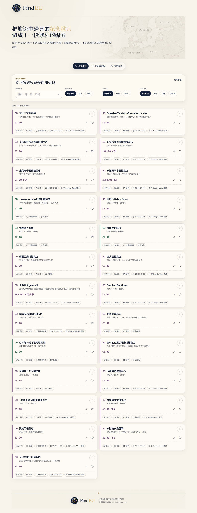

Threads｜FindEU：歐洲 0 歐紀念鈔與紀念幣販售地點的群眾地圖

一句話摘要
對想收集 Euro Souvenir（常被稱為 0 歐紀念鈔）或各地紀念幣的旅人來說，FindEU 把「景點到底有沒有賣、在哪裡、收現金還是刷卡、是否是販賣機」整理成可篩選的實用地圖；它適合作為行前線索，而不是保證現場有貨的官方資料庫。
Threads 貼文重點
作者 `jiannn__` 分享自己暑假獨旅歐洲一個月時，發現紀念歐元相關資訊分散、常遇到景點找不到販售點或錯過營業時間，因此建立 FindEU。貼文介紹三項主要功能：
- **尋找地點**：以目標國家與篩選條件查找已知販售點。
- **回報新地點**：補充目前資料庫尚未收錄的現場資訊。
- **我的收藏**：以愛心收藏地點，方便之後行程規劃。
現站查核：網站可用功能
本次開啟 `findeu.netlify.app` 時，首頁明確寫有「搜尋 0€ Souvenir、紀念紙鈔與紀念幣販售地點；收藏想去的地方，也能回報你在現場看到的新資訊。」並可確認：
- 顯示 **25 個收藏地點**。
- 可依**國家**、**商品類型**（紙鈔／硬幣）、**系列色**（紫色／綠色）及**付款方式**（現金／刷卡／投幣機）篩選。
- 每筆地點提供至少部分的城市／位置說明、價格與幣別、付款方式、營業時間或「待確認」標示；有資料者附 Google Maps 連結。
- 可見例子包括維也納百水公寓、布拉格國家博物館、克拉科夫鹽礦、布達佩斯、里斯本、巴黎凱旋門、聖米歇爾山等地。
- 網站頁尾標示「地點資訊由使用者回報並經審核」。
行前使用法：把地圖變成可執行清單
- 先用目的國與城市篩選，將有興趣的地點加入「我的收藏」。
- 對每個地點確認商品類型、價格幣別與付款方式；販賣機常需要零錢或限定支付方式。
- 開啟 Google Maps 並把店家／景點存到離線地圖；不要只依網站的文字描述尋路。
- 將營業時間標示為「待確認」的地點列為彈性行程，避免專程繞路卻撲空。
- 抵達現場後，核對價格、庫存、營業時間與販售位置；有更新時可回報給社群，讓下一位旅人少走彎路。
收藏與旅遊提醒
- 「0 歐」是紀念票券的面額概念，通常不代表可當作一般流通貨幣使用；購買前先確認發行單位與商品資訊。
- 景點內販售機、博物館禮品店與旅客中心都可能受季節、整修、庫存、入場門票或改裝影響。
- 資料庫中同時有明確時間與「待確認」狀態，使用時應把它視為**社群線索＋出發前最後確認**的工具。
- 有些收藏品存在仿品、二手溢價與跨境運送問題；若重視真偽與保存狀態，優先現場向正式販售點購買並保留收據。
原始連結
- Threads 分享：https://www.threads.com/share/_q9xs6lgW/
- Threads 原貼文：https://www.threads.com/@jiannn__/post/DeCJiADmllz
- FindEU：https://findeu.netlify.app/